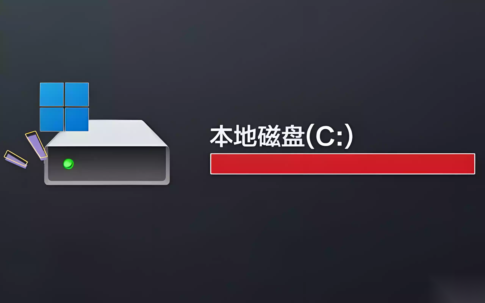
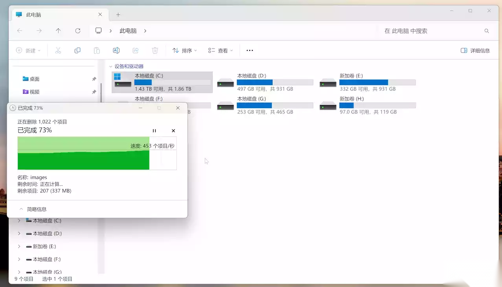
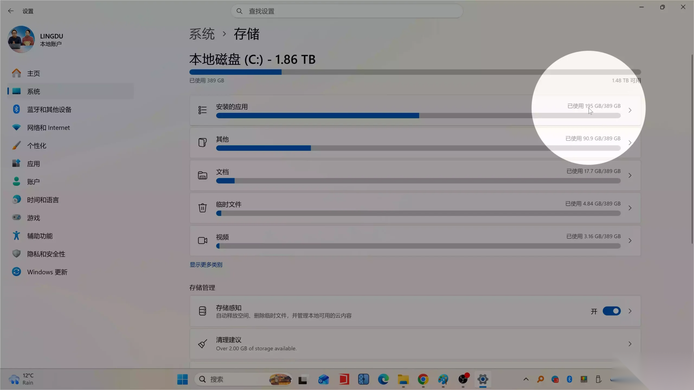
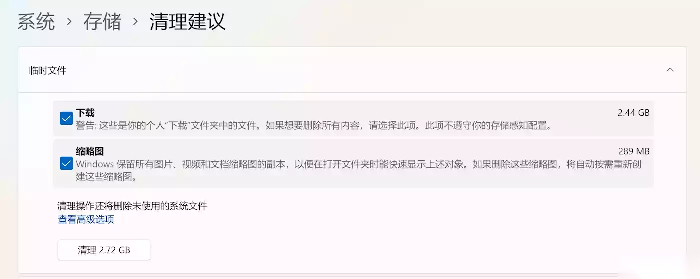
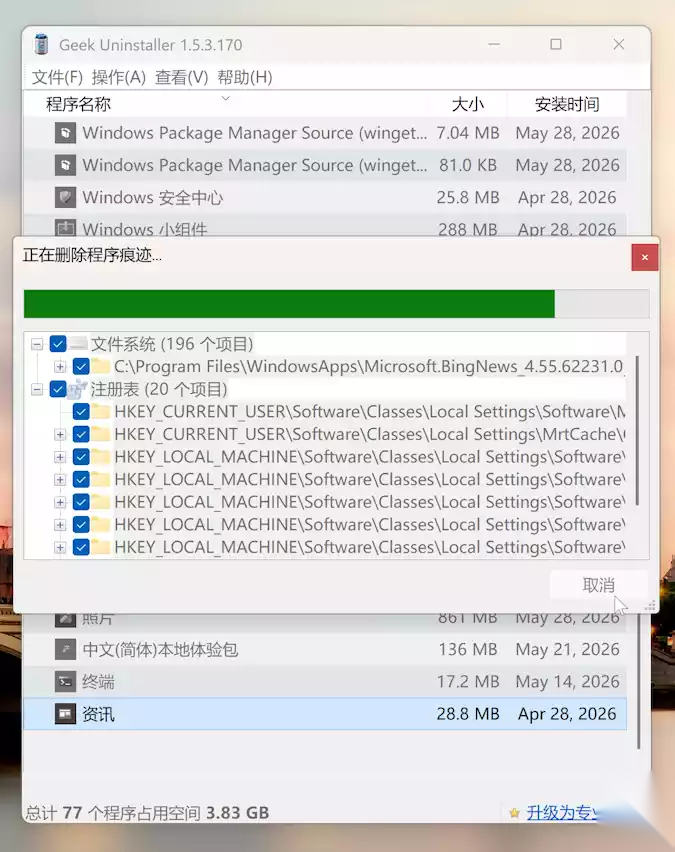
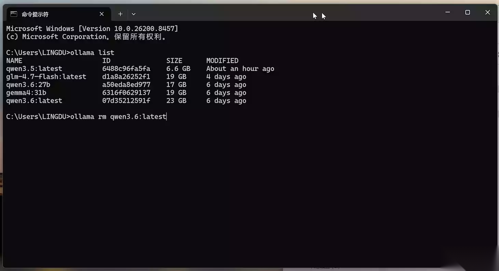
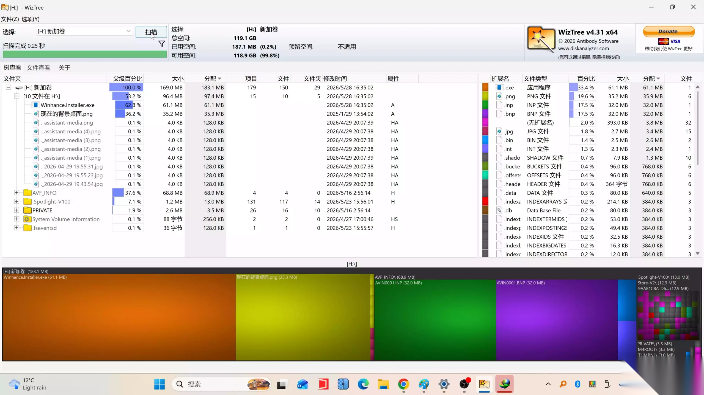
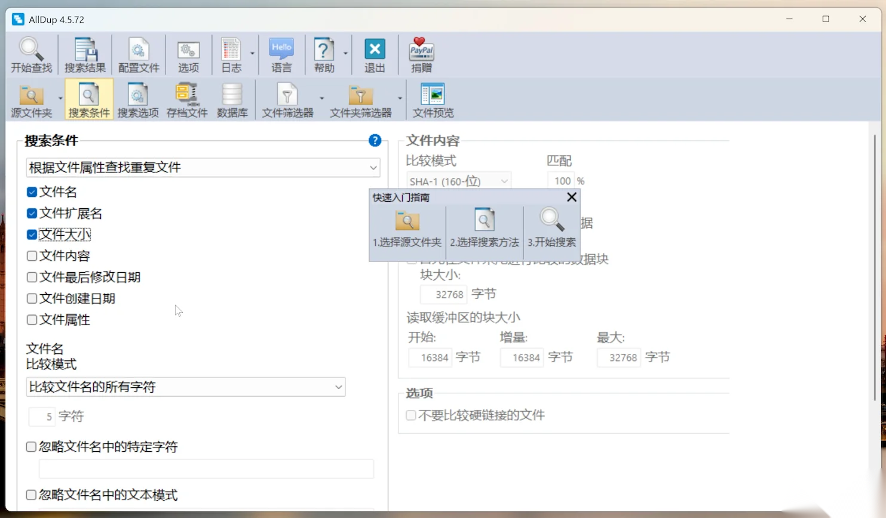

很多朋友的电脑用着用着就会出现一个问题：C盘突然爆红了！开机越来越慢、软件启动卡顿、Windows 更新失败，甚至下载一个文件都会提示空间不足。

实际上，大多数情况下并不是你的电脑配置不够，而是系统中积累了大量垃圾文件、缓存文件、重复文件以及长期闲置的数据。尤其是最近两年越来越多人开始体验本地 AI 大模型，像 Ollama、LM Studio、Open WebUI 等工具下载的模型动辄几十 GB，一个不注意就把硬盘塞满了。
今天就教大家 7 个实用步骤，彻底清理 Windows 11，释放几十甚至上百 GB 的磁盘空间。
第一步：清空回收站
很多人删除文件后，以为已经彻底删除。
实际上这些文件还躺在回收站里。
操作方法：
- 右键桌面回收站
- 点击【清空回收站】
如果你经常删除视频、素材或者大型压缩包，这一步就可能释放数 GB 甚至数十 GB 空间。

第二步：使用 Windows 自带存储感知
Windows 11 自带了非常强大的垃圾清理功能。
打开：
设置 → 系统 → 存储
然后点击：
- 临时文件
- 存储感知
重点清理：
- Windows 更新缓存
- 临时文件
- 缩略图缓存
- DirectX Shader Cache
- 错误报告文件
通常可以释放：
5GB ~ 20GB

第三步：检查下载文件夹
很多人的下载目录堪称垃圾堆。
重点查看：
- EXE安装包
- MSI安装文件
- ZIP压缩包
- 视频素材
- 重复下载文件
路径：
C:\Users\用户名\Downloads
经常能发现几十 GB 甚至上百 GB 的无用文件。

第四步：卸载长期不用的软件
虽然系统自带软件管理、卸载功能，但是该功能无法做到彻底删除干净，所以零度推荐大家可以通过卸载神器 Geek Uninstaller 来彻底卸载不用的软件！
Geek Uninstaller： 【点击下载】或 【备用下载】

重点关注：
- 游戏
- Adobe 系列软件
- 剪辑软件
- AI工具
- 开发环境
半年以上没打开过的软件基本都可以考虑卸载。
第五步：删除闲置 AI 模型（重点推荐）
这是 2025 年以后最容易被忽略的空间杀手。
很多人安装了：
- Ollama
- LM Studio
- GPT4All
- Open WebUI
- Jan
- AnythingLLM
然后下载了大量模型。
例如：
- DeepSeek-R1 70B：40GB+
- Llama 3 70B：40GB+
- Qwen3 30B：18GB+
- Gemma 3 27B：15GB+
很多模型下载后体验几次就再也没打开过。
查看 Ollama 已安装模型
CMD 下执行命令：
ollama list
删除模型
ollama rm 模型名称
例如：
ollama rm qwen3.6:latest

仅这一项，很多用户就能释放：
20GB ~ 200GB+
第六步：查找占空间的大文件
如果你不知道空间到底被谁占用了，那么强烈推荐使用 WizTree。
它可以快速扫描整个硬盘，并直观显示：
- 哪个文件夹最大
- 哪个文件最占空间
- 哪些目录异常膨胀
经常能发现：
- AI模型
- 微信缓存
- Docker镜像
- 虚拟机文件
- 视频素材
很多人第一次扫描就会发现几十 GB 甚至上百 GB 的隐藏空间占用。
WizTree 软件下载：【点击前往】、或【直接下载】

第七步：查找重复文件
电脑使用时间久了以后，往往会出现：
- 重复照片
- 重复视频
- 重复素材
- 重复备份文件
推荐使用 AllDup。
它可以帮助你快速找出重复文件并删除。
特别适合：
- 剪辑师
- 摄影师
- 自媒体创作者
- 素材收集爱好者
经常能额外释放：
5GB ~ 100GB
AllDup 查找重复工具下载：【点击前往】或 【网盘下载】

总之
如果你的电脑已经使用超过一年，建议按照以上 7 个步骤完整检查一次。
尤其是最近安装过AI大模型：
- Ollama
- LM Studio
- DeepSeek
- Qwen
- Llama
等本地 AI 模型的朋友，很可能会发现几十 GB 甚至上百 GB 的空间都被闲置模型占用了。
很多时候电脑变卡，并不是配置不够，而是这些长期积累的垃圾文件、缓存数据和无用资源正在悄悄吞噬你的硬盘空间。
花十几分钟做一.6次深度清理，或许就能让你的电脑重新恢复流畅。